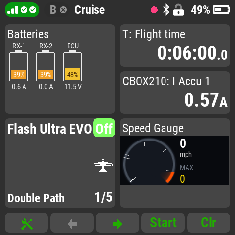
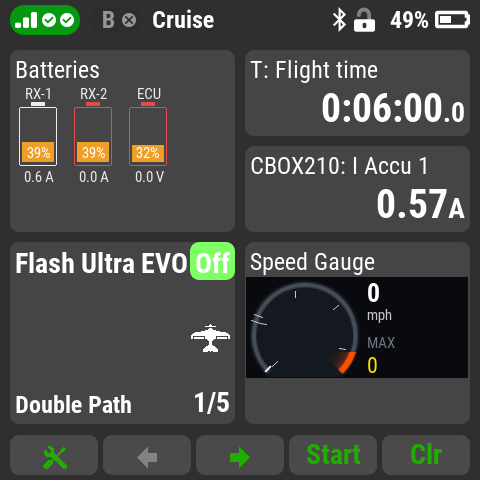
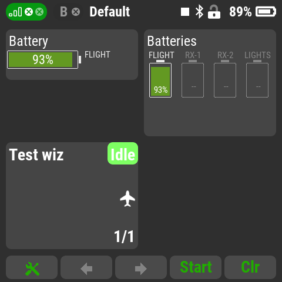
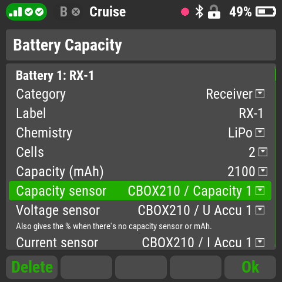
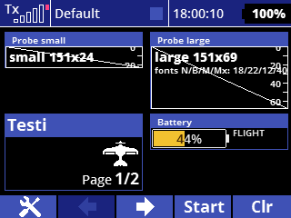

Battery Capacity
Up to four battery packs per model (receiver, turbine ECU, gear,
brakes, lights, aux or flight packs) as battery gauges on the main
screen, with spoken callouts that name the pack: "receiver two, 30
percent". For the DC/DS-24 II and the first-version DC/DS-24.

- Two windows: one battery on its side (single size) or
up to four upright batteries (double size), filled green,
yellow, orange or red by % remaining, with the current or
voltage under each.
- Any capacity sensor: mAh used (MUI, Central Box), %
remaining, or the voltage alone, including the receivers' own
voltages. An mAh pack starts at the % its resting voltage
shows, so a part-charged pack is right from the start.
- Callouts: up to four capacity levels per pack, a
low-voltage alarm (per cell or per pack) with a flashing red
outline, an optional current alarm and max current, and a
"pack not full" check when you plug in.
- Knows a pack swap from a brown-out: callouts reset
for a fresh pack and carry on after a brief dropout.
- Smart defaults from the pack's category and chemistry
(LiPo, LiHV, Li-ion, LiFe, NiMH/NiCd); everything can be
changed.

Above: one receiver pack and the ECU pack unplugged. Their
outlines turn red and the low-voltage alarm speaks.

Advisory only. It never controls the model, and doesn't
replace the transmitter's own receiver-voltage alarm.
Setting up

- Add Battery Capacity in Applications - User
Applications.
- In its settings choose Add battery, then the category,
chemistry, cells, capacity (mAh) and the capacity,
voltage and (optional) current sensors. Every
pack needs a voltage sensor; the screen flashes a reminder and
the list shows "SETUP!" until it's set.
- Put Batteries (double size) or Battery (single
size) on a page in Timers/Sensors - Displayed
telemetry.
Central Box: pick U Accu 1/2 as the voltage sensors (the
receiver measures the box's regulated output, not the pack).

Above: the single-size window on a first-version DS-24.
Version: 0.1.0
Compatibility: DC/DS-24 and DC/DS-24II
Voice: Piper text-to-speech with the "Amy" voice by Mycroft /
Rhasspy; the sound files are licensed CC BY-SA 4.0. Battery
Capacity: MIT license, Copyright (c) 2026 Aaron George.
Source and full credits:
github.com/Flazzarious/jeti-lua-apps